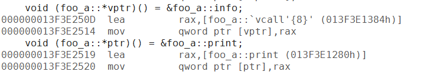
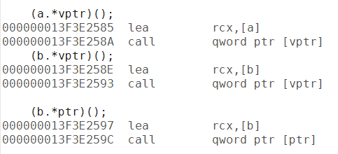
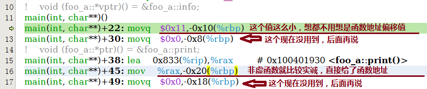
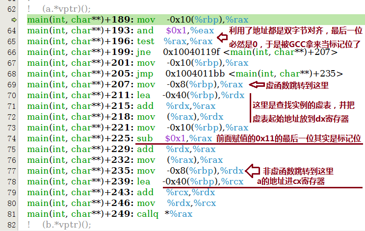
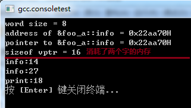

最近在《C++对象模型》一书里说到的virtual的成员函数指针，低于128的被cfront编译器认为是虚表偏移量（支持子类对父类函数的覆盖）。VC只是提了下单继承、多继承和虚继承的实现方案不同，GCC没有提及，所以就专门稍微深入分析研究下他们的实现机制。
以下所有代码都使用了64位编译，所以32位编译和运行的结果可能有略微差异。
单继承
首先是单继承的情况。这里用到的代码如下所示：
#include <ctime>
#include <vector>
#include <algorithm>
#include <cstdio>
#include <stdint.h>
#include <cstddef>
#include <string>
class foo_a
{
public:
virtual ~foo_a(){}
virtual void info() {
printf("%s:%d\n", __FUNCTION__, __LINE__);
}
void print() {
printf("%s:%d\n", __FUNCTION__, __LINE__);
}
};
class foo_b: public foo_a
{
public:
virtual void info() {
printf("%s:%d\n", __FUNCTION__, __LINE__);
}
};
int main(int argc, char* argv[]) {
void (foo_a::*vptr)() = &foo_a::info;
void (foo_a::*ptr)() = &foo_a::print;
foo_b b;
foo_a a;
printf("word size = %d\n", (int)(sizeof(size_t)));
printf("address of &foo_a::info = 0x%llxH\n", &foo_a::info);
printf("pointer to &foo_a::info = 0x%llxH\n", vptr);
printf("sizeof vptr = %d\n", (int)(sizeof(vptr)));
(a.*vptr)();
(b.*vptr)();
(b.*ptr)();
return 0;
}
先不展示这段代码的输出结果。这里面只有一层继承，分别有虚函数和非虚函数。并且都有指针赋值和执行操作。不出所料的是，(b.*vptr)() 这一行执行的是foo_b的info函数（虽然赋值的时候给的是foo_a的）。那么，VC和GCC是怎么实现这一功能的呢
VC单继承成员函数指针实现

图一： VC指针赋值
可以看到，对非虚函数指针，直接把函数地址赋值过去了，但是对于虚函数，赋值的并不是foo_a::info的地址，而是给了一个*foo_a::`vcall’{8}’*的函数地址。

图二：VC成员函数调用
调用的时候倒是比较简单，各种的实现都一样。都是把类实例的地址给了cx寄存器，然后直接调用调转。那么这里的关键就在于vcall做了什么，怎么保证调用了正确的虚函数。
call指令里只有一行jmp跳转，我就不列举出了，接下来看vcall{8}干了什么。

图三： VC虚成员函数vcall实现
这里把cx取出并取值后加了8的地址偏移，说明VC内单继承情况下的虚表指针放在了数据结构最前面。+8显然是第二个虚函数的地址偏移（第一个是析构）。然后就华丽丽地a跳到了foo_a::info()，b跳到了foo_b::info() 函数。
由此可见，对于虚函数指针，会多一次vcall的函数跳转。由此来保证调用的是子类里的成员函数。
好吧运行结果还是有必要贴一下的

图四： VC单继承测试代码执行结果
GCC单继承成员函数指针实现
接下来就是GCC了。GCC是怎么实现的呢？同样还是祭出大杀器，反汇编。

图五：GCC单继承下成员函数指针赋值操作
很明显就和VC不一样啦，GCC在给成员函数指针赋值的时候，给了两个值，第二个暂时没用到后面讨论。第一个值对虚函数而言，给了*17（0x11h）*这个值，非虚函数直接上了函数地址**。
从这里看，非虚函数它会怎么操作显而意见了，但是它不像VC那样多一层vcall跳转，他是怎么判断是不是虚函数的呢？往下看函数调用：

图六：GCC单继承下成员函数指针调用
可以看到，GCC的成员函数指针和VC的设计明显不同。GCC的成员函数指针占用了两个word，第一个用于记录函数指针或指针偏移，第二个用于记录虚表偏移。
而由于x86架构下默认是2字节对齐，ARM是4字节对齐或者8字节对齐。GCC正好利用了字节对齐的特点，用最后一位来标识是不是虚函数。如果是虚函数则查找虚表，计算实际函数地址；否则就直接跳转到该函数。
所以和VC不同的是，VC的vcall是长跳转，而gcc这种写法是短跳转。按个人理解，GCC的方式更利于CPU指令流水线的指令缓存。
但是这种做法带来的缺陷就是类成员函数指针比VC多消耗了一倍的内存，执行结果如下：

图七：GCC单继承测试代码执行结果
多重继承和虚继承的分析就下次再来啦。